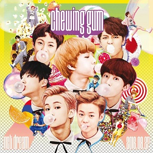
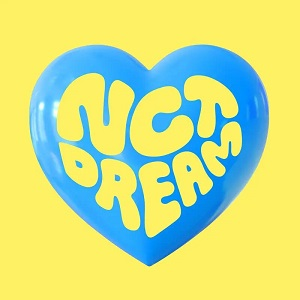

INFINITE EXPANSION
作品介绍
NCTDREAM的主要作品有Chewing Gum,My First and Last,We Young,We Go Up,WE BOOM,Reload,Hot Sauce,Hello Future
 |
2016年8月25日，于Ment音乐节目《M! Countdown》表演《Chewing Gum》舞台，正式出道 [2] ；12月1日,罗渽民因腰伤缺席MAMA [3] ；2017年2月9日发行首张单曲专辑《THE FIRST》 [4] ；8月17日发行首张迷你专辑《WE YOUNG》 [5] ；2018年3月8日，通过Mnet《M! Countdown》展示《Go》舞台，渽民回归 [6] ；9月3日发行第二张迷你专辑《WE GO UP》， [7] 12月19日，SM公告楷灿因骨折缺席年末舞台； [8] 31日，成员李马克从组合中毕业 [9] ；2019年7月26日发行第三张迷你专辑《WE BOOM》 [10] ；2020年4月14日，SM公告NCT DREAM将进行组合改编，改变原有毕业体制，包括李马克在内的7名成员将以NCT U组合形式活动；29日以六人体制发行第四张迷你专辑《Reload》 [11-12] ；10月12日，成员李马克于《NCT - The 2nd Album RESONANCE Pt.1》收录曲《舞台路 》正式回归组合 [13] ；2021年5月10日，发行首张正规专辑《Hot Sauce》 [132] ；6月28日，发行后续专辑《Hello Future》 [133] ；2022年3月28日，发行第二张正规专辑《Glitch Mode》 [142] ；5月30日，发行后续专辑《Beatbox》 [143] 。
专辑展示
|  Chewing Gum | The First | We young | We Go Up |
| We Boom | Reload |  Hot Sauce
Hot Sauce
|
 Hello Future |
| Glitch Mode | Beatbox | Candy |